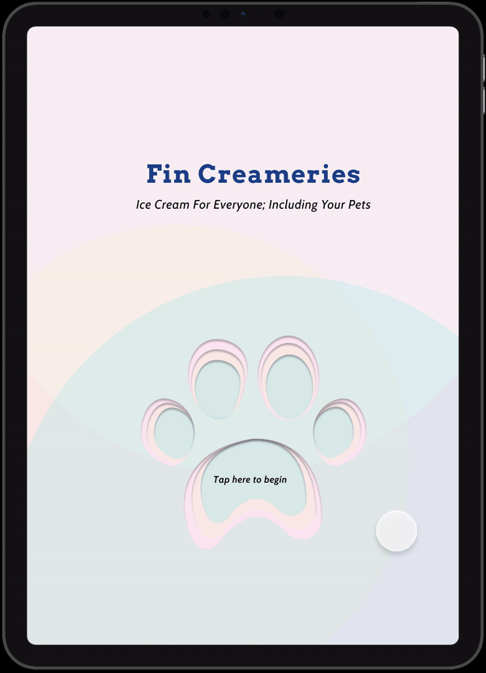
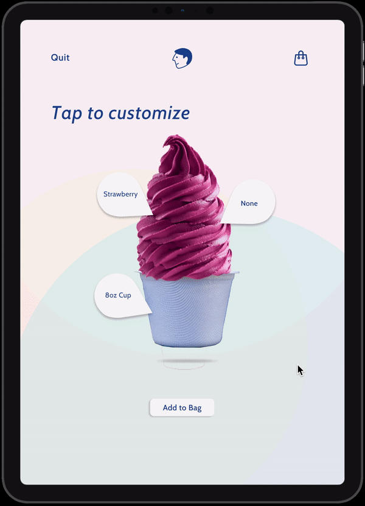

Designing an Ice Cream Vending Machine for Everyone; Including your Pets
An interactive vending machine that will have a touch-screen that will have the option to serve ice-cream for themselves or their pet. The ice-creams are pet-friendly and healthy for them. The individual will have the option to customize their creams and then pay for it. Now they both can enjoy it together.
- Type Group Project
- Role UX / UI Designer
- Duration 2-Weeks
- Skills UX and UI Design
Research
Check out later to write more off this.
People are actually obsessed with their pets, especially their dogs. There has been a rise of bringing in more dog-friendly menus into resturants. Heck, even Starbucks is give out these cute "frappunnios" for dogs in the drive-thru.
Visually Attractive
In American households, there are 84.6 million pets compared to 52.8 million children.
Easy-to-Follow
70% of American households owns a pet-- along with dogs being the most owned pet.
Photo by Susn Matthiessen on Unsplash
Useful
1,200 pet owners were surveyed by the APPA and 90% consider pets as family
Photo by Jasmin Chew on Unsplash
The Research Conclusion and Problem
Many restaurants, bars and vending machines still remain not pet-friendly for those who sought to and do walk with their companion(s). Despite there are a lot of valuable statistics available, but there are safety concerns pertaining to pets in the restaurants.
Groundwork
Our Solution
A soft serve ice cream vending machine that will dispense customizable creameries for everyone, including for their pets. We wants to allow these users to have a place where they could go support their love for their pets while they are on the go.
Project Goals
We focused mostly on the interactive process of how to use the vending machine, the steps taken to ordering an ice cream for themselves and their pet.
Visually Attractive
The design of the UI matches the integration of pets and people with ice cream. Its a cute idea and should be designed accordingly.
Easy-to-Follow
The users will be able to follow through and customize their ice cream while they are on the go!
Useful
The users will be able to follow through and customize their ice cream while they are on the go!
Personas
We focused mostly on the interactive process of how to use the vending machine, the steps taken to ordering an ice cream for themselves and their pet.
Inspiration Board
Our design approach was mostly inspired off these colors to make our designs look and seem cute. We wanted the product to seem fun and overall friendly to other people.

Style Guide
We believe this style guide captures the idea of making the design cute due to the light color, and typography and as well as the rounded interactive parts.

Style Guide
We believe this style guide captures the idea of making the design cute due to the light color, and typography and as well as the rounded interactive parts.
Visually Attractive
The users will be able to follow through and customize their ice cream while they are on the go!
Easy-to-Follow
The users will be able to follow through and customize their ice cream while they are on the go!

Useful
The users will be able to follow through and customize their ice cream while they are on the go!
